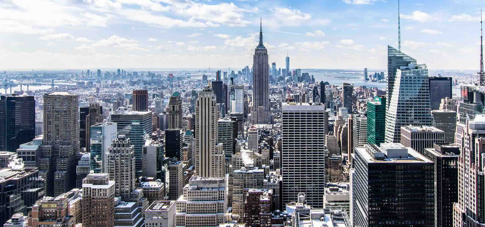
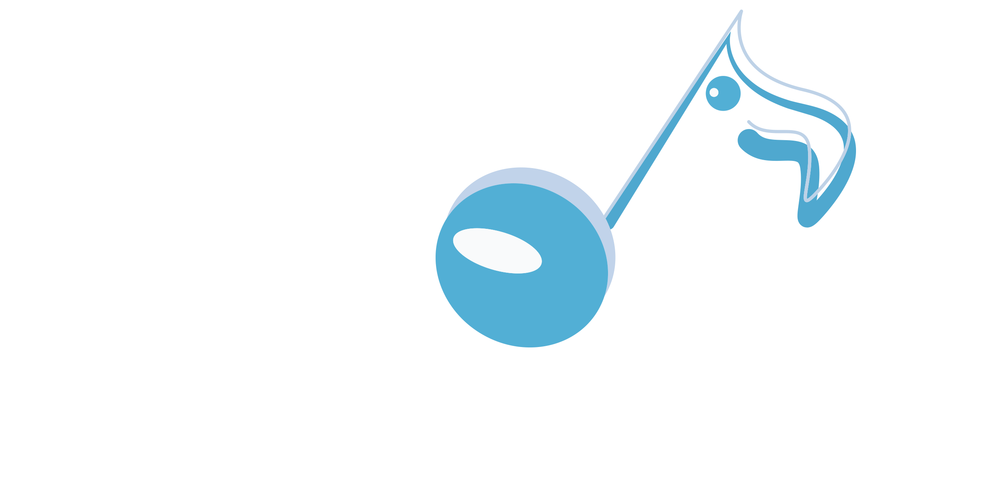

知識庫(2)
都市篇

都市噪音
對噪聲的感受因各人的感覺、習慣等不同；對於某人喜歡的聲音，可能對於另一個人是噪聲；噪聲是一個主觀的感受。長期的噪音可以影響人的身心健康。為減低噪音對四周環境和人類的影響，主要噪音控制方式對噪音源、噪聲的傳播路徑及接收者三者進行隔離或防護，將噪音的能量作阻絕或吸收。
Urban Noise
播放"音樂"


都市音樂
Urban都市音樂，又稱為Urban Contemporary，是二十世紀八十年代和九十年代基於R&B/Soul出現的新詞。Urban是一種非常流暢和華麗的音樂風格，同時他浪漫的情歌調調和quiet storm 一樣非常迎合大眾的口味，Urban能融合快歌和舞曲，在高科技感和入耳的旋律中保有靈魂似的唱腔。
Urban Music

播放"音樂"


播放"音樂"
乾淨能源
清潔能源、潔淨能源或綠色能源是指不排放污染物的能源，如水力發電、風力發電、太陽能、生物能（沼氣）、地熱能、海潮能、海水溫差發電等。離岸風力發電（Offshore wind power），又稱離岸風力能源，係於海上建設風力發電廠，通常設置地點位於大陸架，利用風能進行發電。一般而言，海上風力資源較陸上豐富，且風向較為穩定，使得離岸風力發電較陸上風力發電在同樣時間內能提供更多的電力，且設施遠離民眾居住地，各界對此類鄰避設施的反彈也較小。
Clean Energy